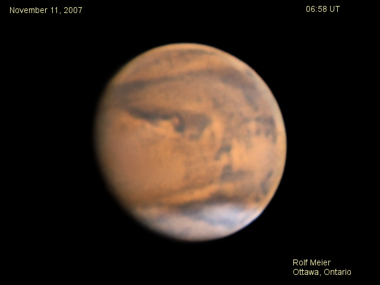

{kind=link}
{kind=link}
{kind=link}
{kind=link}
{kind=link}
{kind=link}
{kind=link}
{kind=link}
{kind=link}
{kind=link}
{kind=link}
{kind=link}
{kind=link}
{kind=link}
{kind=link}
{kind=link}
{kind=link}
{kind=link}
{kind=link}
{kind=link}
{kind=link}
{kind=link}
{kind=link}
{kind=link}
{kind=link}
{kind=link}
{kind=link}
{kind=link}


Previous oppositions of Mars:
Mars, 2005 apparition
Mars, 2003 apparition
Copyright Rolf Meier
Ottawa, Ontario, Canada
Unless otherwise noted, images are stacked using Registax4, wavelet processing is applied, and final adjustments are made using Paint Shop Pro.
First images from July, 2007 started to show some dust storm activity on the planet, despite the small size of Mars. Within a few weeks, however, the planet was totally envoloped by a dust event, and the contrast of features was very weak. Images taken after this time show a greatly altered surface appearance of Mars as the dust was more intense in some regions than others. It seemed to clear suddenly with observations beginning around September 17 showing more contrast. However, deposited dust has changed the appearance of many albedo features. In October, most of the albedo features were more normal in appearance (as in traditional maps) but with many subtle changes. Feature contrast still lower than normal. The Hellas region appears fairly flat, possibly indicating continuing dust in the atmosphere of Mars. One of the interesting areas from October to November was the NPH and its changing cloud patterns. The SPC was not seen at this time.
December was the month of opposition and closest approach, but unfortunately the weather was extremely poor. There were very few clear periods and yet images were taken on these nights even though the seeing was generally poor, or else there would have been no images at all! By this time much of the dust had settled and the contrast of the albedo features was the best so far. During December there were many occurences of white clouds all over the planet.
The new year started with very cold temperatures and few clear nights.
The most recent images are at the top. As is traditional, South is at the top. Click on the small pictures to get the full-sized image. The images can be used for educational purposes as long as credit is provided.
Return to Home page.
January 3, 2008
Seeing quite poor, with cold temperatures (-19C) and windy conditions.
Clouds are seen over Olympus Mons and the Tharsis region (evening terminator) as well as the south and north polar regions.
C14 @f45, SkyNyx 2.0M
December 27, 2007
Poor seeing, but slightly better than most nights this month. Seeing actually deteriorated as the planet rose in the sky.
Blue light images show clouds the best. Cloud perhaps over Elyisium Mons.
C14 @f45, SkyNyx 2.0M
December 24, 2007
Poor seeing.
Opposition night. Limb haze and clouds, but poor detail. Contrast is now very good, except that the Hellas region still appears dusty.
C14 @f45, SkyNyx 2.0M
December 18, 2007
Poor seeing.
Clouds and haze are visible on the morning and evening limbs.
C14 @f45, SkyNyx 2.0M
December 11, 2007
Poor seeing.
Many cloudy streaks can be seen over the planet. Also a red streak in the NPH.
C14 @f45, SkyNyx 2.0M
December 9, 2007
Very poor seeing.
C14 @f45, SkyNyx 2.0M
December 6, 2007
Seeing poor. Solis Lacus is visible.
By now Olympus Mons is nearly the same shade as the background and is difficult to discern.
Lots of clouds in both the North and South polar regions.
C14 @f45, SkyNyx 2.0M
November 24, 2007
Seeing fair. Elysium Mons visible as a bright spot.
Again by coincidence, Damian Peach imaged Mars at the same CM as this image but on a different date. Once again I compared the 2 images to see what cloud differences might show up. I proceeded to make this animation which switches between the 2 dates to more readily draw the eye to variations. As on the November 11 animation, the movement of clouds in the NPH is evident.
C14 @f45, SkyNyx 2.0M
November 17, 2007
Seeing poor to fair. Interesting red streak in the NPH. Hellas rather flat.
C14 @f45, SkyNyx 2.0M
November 11, 2007
C14 @f45, SkyNyx 2.0M
Seeing good. Lots of complexity visible in the NPH. The above images were made into an animation.
The view through the eyepiece at 500X was wonderful. The bright NPH stood out immediately, and then next the almost black line above it. Sinus Sabeaus was also easily seen as well as lots of smaller details. However, the eye could not detect the very smallest features revealed by image processing. Maybe with more practice I could see more - visually observing Mars requires getting used to, with Mars in good position only briefly every 2 years.
There is a faint cloud over Aeria/Edom which partly obscures some of the smaller albedo features. It shows up best in blue light on the monochrome images.
By coincidence, Damian Peach imaged Mars at the same CM as the 06:17 image but on a different date. This gave me the idea of comparing the 2 images to see what cloud differences might show up. With Damian's permission, I proceeded to make an animation which switches between the 2 dates to more readily draw the eye to variations. The movement of clouds in the NPH is immediately evident. But there are also some white spots directly above the date which do not move. This could possibly indicate the presence of ice on the surface, either part of the North Polar Cap, or ice at the bottom of craters. The fainter cloud over the Edom region is also most apparent on the November 11 image as an obscuration of some of the small features which are more evident in the November 5 image.
Overall, the two images, taken independently by two observers, are remarkably well matched, considering that the coincidence was not planned at all. A few minor adjustments were made, such as obviously rotating and resizing the images to make them line up, but the colours and contrast were initially quite similar. There are some minor differences due to slightly different processing techniques, particularly around the limb.
November 2, 2007
Seeing fair. One of the most interesting features is the volcano Olympus Mons. In these images, it appears as a reddish spot, but in the very center is a tiny black spot, probably corresponding to the volcano itself. It is interesting how OM has become less dark during the past month, as the dust slowly settles to more "normal" distribution. There are alslo clouds forming over Tharsis, best seen in the blue light image. This image shows Olympus Mons best. A bright cloud in the NPH is seen on the limb.
C14 @f/37, SkyNyx 2.2M
October 31, 2007
Seeing poor.
C14 @f37, SkyNyx 2.2M
October 29, 2007
Seeing poor. Some detail in the Solis Lacus area, and Olympus Mons is distinct.
C14 @f/37, SkyNyx 2.2M
October 26, 2007
Seeing poor.
C14 @f45, SkyNyx 2.2M
October 21, 2007
Seeing poor, with only the major features visible.
C14 @f45, SkyNyx 2.2M
October 5, 2007
Seeing poor. NPH quite prominent, with a bright knot, probably a cloud. Also a dark band in the NPH. Albedo features are nearly "normal" as the dust is settling. The Argyre Planitia is still a bright spot. South pole remains covered by a thin haze or dust, more yellow compared to the blue NPH. Compare to August 27 and 28 when the same hemisphere was visible. Contrast is now much better. Mars has reached 10.0 arcseconds in apparent size!
Image with a SkyNyx 2.2M camera on loan from Lumenera. C14 @f45, SkyNyx 2.2M, 15 fps
September 24, 2007
Seeing fair to good. Olympus Mons is an obvious large dark spot and the 4 volcanoes in Tharsis appear as dark spots. Onn images taken in 2005, these peaks were difficult to see because they were usually covered in clouds.
Images with a colour version of the SkyNyx camera on loan from Lumenera. C14 @f45, SkyNyx 2.0C, 24 fps
September 21, 2007
Seeing fair. Olympus Mons visible near the limb.
Images with a colour version of the SkyNyx camera on loan from Lumenera. C14 @f45, SkyNyx 2.0C, 24 fps
September 19, 2007
Seeing fair to good. Very similar view as 2 days previous, but the cloud in the NPH has moved off or is gone. Elysium Mons appears red.
C14 @f45, SkyNyx 2.0M, 24 fps
September 17, 2007
Seeing fair to good. Dust may have settled significantly now and Mars is showing more detail. Bright cloud in the NPH.
C14 @f45, SkyNyx 2.0M, 24 fps
September 14, 2007
Seeing poor.
C14 @f45, SkyNyx 2.0M, 37 fps
September 10, 2007
Seeing fair. Syrtis Major prominent, with the Hellas region very bright. A hood is visible over the South polar region as well as the usual NPH.
C14 @f45, SkyNyx 2.0M, 24 fps
September 2, 2007
Seeing poor. Sinus Meridiani appearing nearly normal but at low contrast level.
C14 @f45, SkyNyx 2.0M, 24 fps
August 28, 2007
Seeing poor, with moments of good seeing.
C14 @f45, SkyNyx 2.0M, 24 fps
August 27, 2007
Seeing fair, with moments of good seeing. NPH is distinct in blue light.
C14 @f37, SkyNyx 2.0M, 48 fps
August 21, 2007
Seeing poor. Olympus Mons is readily seen as dark instead of a light feature. Red light image only.
C14 @f37, SkyNyx 2.0M, 48 fps
August 14, 2007
Seeing poor. Contrast still weak. The NPH stands out and is slightly bluish. Mare Cimmerium is central. Olympus Mons is a dark spot just at the terminator.
C14 @f37, SkyNyx 2.0M, 48 fps
August 11, 2007, 09:23 UT
Seeing poor to fair. Contrast continues to be weak. The NPH stands out clearly and is slightly bluish. Mare Cimmerium is central.
C14 @f37, SkyNyx 2.0M, 48 fps
August 5, 2007, 09:12 UT

Seeing poor.
C14 @f37, SkyNyx 2.0M, 48 fps
August 1, 2007, 09:34 UT
Seeing fair. Hellas appears particularly bright in red light.
C14, f/37, SkyNyx 2.0M, 48 fps
July 30, 2007, 09:17 UT
Seeing fair. Using red channel as luminance has brought out more detail.
C14, f/37, SkyNyx 2.0M, 48 fps
July 23, 2007, 09:17 UT
Seeing poor.
C14, f/37, SkyNyx 2.0M, 48 fps
July 22, 2007 04:14 UT
Seeing poor.
C14, f/37, SkyNyx 2.0M, 48fps
July 17, 2007, 08:51 UT
Seeing poor to fair.
C14, f/37, SkyNyx 2.0N, 48fps
{kind=link}
{kind=link}
{kind=link}
{kind=link}
{kind=link}
{kind=link}
{kind=link}
{kind=link}
{kind=link}
{kind=link}
{kind=link}